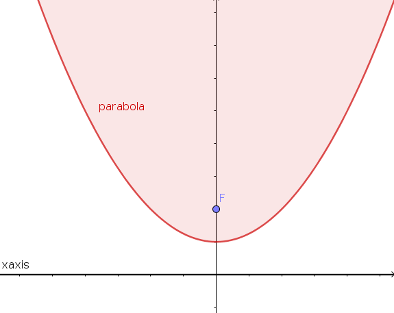
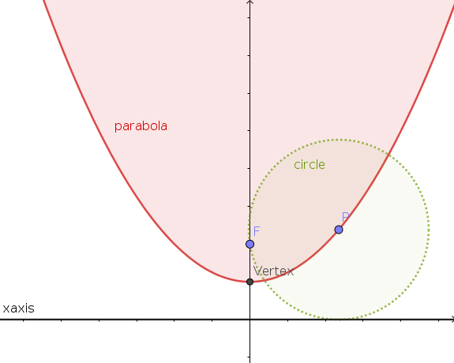
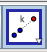
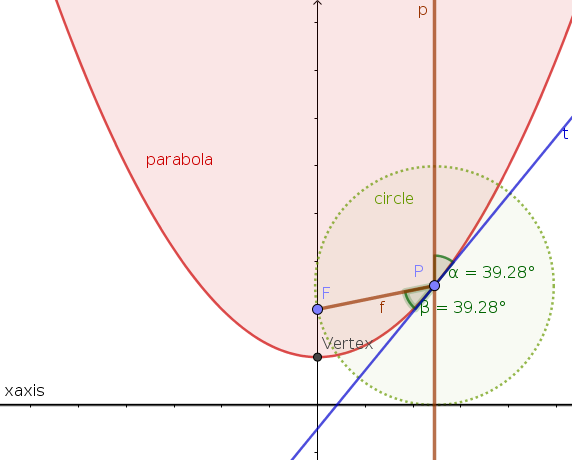
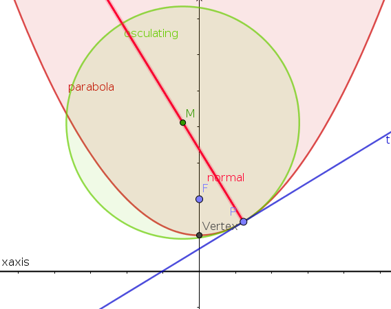
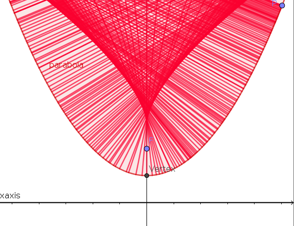

Section 2.1 Parabola in GeoGebra
Subsection 2.1.1 Drawing a Parabola
In GeoGebra, we construct a parabola by choosing a point, called the focus, together with a line, the directrix. Among other things, we will discuss the significance of these two objects here, but let us first construct a parabola: While you can choose any point and line (no matter of what slope), it might be useful to choose a point \(F\) on the \(y\)-axis as focus and the \(x\)-axis as directrix. So, please, construct these in GeoGebra and then use the parabola tool to draw the parabola.

We first explore how this construction and the quadratic equation \(y=\alpha x^2+c\) with some parameters \(\alpha\) and \(c\) are related: Check that the vertex (i.e., the extremal point, thus the minimum or maximum) of the parabola is given by the midpoint between the origin and the focus \(F\text{.}\) Then by looking at the equation of the parabola (and possibly changing in which for this equation is displayed by going to Settings > Algebra for the parabola) answer the following questions: Can you express the constant \(c\) in terms of \(y\)-coordinate of \(F\text{?}\) Can you also express the parameter \(\alpha\) in terms of that same \(y\)-coordinate of \(F\text{?}\)
This shows that the parameters in the quadratic equation \(y=\alpha x^2+c\) (or any quadratic equation describing a parabola) can be easily calculated from the location of \(F\) in relation to the directrix. However, we can make the geometrical relation between focus, directrix and parabola even more concrete.
Subsection 2.1.2 A Defining Property of a Parabola
We have just seen that the vertex of the parabola has the property that it has its distance to the focus \(F\) is the same as its distance to the directrix. We now check that this is true for any point \(P\) on the parabola: Attach a point \(P\) to the parabola, and check that the distance \(FP\) and the distance from \(P\) to the directrix (your \(x\)-axis) is the same.

Underlying this observation is the following geometrical definition of the parabola.
Definition 2.1.1.
A parabola is the equidistant set (or midset) to a fixed point (the focus) and a line (the directrix) not containing this point; i.e., the parabola is the locus of those points \((x,y)\) in the plane that have the same distance from the focus and the directrix.
Let us explain this result in different words. You are properly familiar with the perpendicular bisector of a line joining two points \(A\) and \(B\text{:}\) Any of the points on the bisector has the same distance from the point \(A\) as it has from the point \(B\text{.}\) If you replace one of these two points, say \(B\text{,}\) with a straight line (not passing through \(A\)), you can ask the same question again: Which points in the plane have the same distance to \(A\) as they have to the line? The answer is: All points of the parabola that has \(A\) as focus and the line as its directrix.
Subsection 2.1.3 There is only one Parabola (up to similarity)
How different are parabolas from each other? Maybe you remember the following SageMath code where we plotted a regular parabola and a skinny one in
SageMath Lecture 2:
Despite this, we will now check that all parabolas are
similar to each other: Given any two parabolas, you can translate and rotate one of them such that its directrix coincides with the directrix of the other one. What you end up with is the following situation of two parabolas: One we already have with focus
\(F\text{,}\) and another one with a different focus, let us say
\(G\text{,}\) both foci on the
\(y\)-axis. So, construct this second parabola with focus
\(G\) on the
\(y-\)-axis. Then using the
dilate from point tool (from which point? by which factor?), show that one of the parabolas is just a scaled copy of the other.

So, all parabolas are similar to each other — they all have the same shape!
Subsection 2.1.4 A Property with many Applications
We now consider the original parabola with focus \(F\) and point \(P\) on it again. Find the tangent \(t\) to the parabola at \(P\text{,}\) the line \(p\) that is perpendicular to the directrix and passes through \(P\text{,}\) and the segment \(f\) joining \(F\) and \(P\text{.}\) Measure the angle at \(P\) between \(p\) and the tangent \(t\text{,}\) and the angle between \(f\) and the tangent \(t\text{,}\) and make note of your observation as you move \(P\) along the parabola (hint: you might consider adding additional points on the lines to measure the angles nicely — then hide the points again).

With the observation you just made, you should now be able to understand the following explanation for
parabolic mirrors used in reflecting telescopes, flashlights, and car headlights: In an astronomical telescope, parallel rays of light coming into a parabolic mirror are focused at a point
\(F\text{.}\) This is due to the laws of optics since a ray of light is reflected on the parabolic surface of the mirror according to the rule that the incoming angle equals the outgoing angle of the ray (which is the observation we just made). For flashlights and car headlights the ray of lights go the other way: the bulb is located at the focus
\(F\) and when turned on, parallel — and thus bundled — rays of light leave the parabolic reflector.
Subsection 2.1.5 Osculating Circles & Evolute
Finally, we have some fun with the osculating circle. Find the osculating circle to the parabola at the point \(P\) (you can either go through the construction we did during the semester, or there is also a convenient GeoGebra command that will draw the it). Also find the the center \(M\) of the osculating circle. By construction, the line passing through \(M\) and \(P\) is the normal to the parabola at \(P\text{,}\) i.e., the line perpendicular to the tangent \(t\) to the parabola at \(P\text{.}\)
Instead of the whole normal line that passes through \(M\) and \(P\) here, we only draw a ray originating from \(P\) and passing through \(M\text{.}\)

Now, let us concentrate on this normal (hide most of the other stuff): Select "Trace On" in its properties (right-click on it), and then move the point \(P\) fairly fast across the parabola. Your picture should look something like this:

Do you see a kind of curve appearing in the above picture? If you are not satisfied with your outcome and want another try, then go to "Refresh View" in the "View" menu.
Now, refresh the view, hide the normal, but show the center \(M\) of the osculating circle — and now check out what kind of curve the point \(M\) "traces out" as you move \(P\) (very slowly this time) along the parabola. This curve is called the evolute.
Definition 2.1.2.
The locus of all the centers of the osculating circles, is called the evolute of the given curve.
Our construction above confirms an observation we made during the semester for other curves: An evolute is the envelope of the normals to a curve.